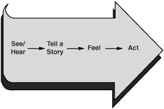

One of the best ways to persuade others is with your ears—by listening to them.
—DEAN RUSK
Over the past few months your daughter Wendy has started to date a guy who looks like he’s about ten minutes away from a felony arrest. After only a few weeks of dating this fellow, Wendy’s clothing preference is now far too suggestive for your taste, and she routinely punctuates her language with expletives. When you carefully try to talk to her about these recent changes, she shouts accusations and insults and then withdraws to her room where she sulks for hours on end.
Now what? Should you do something given that you’re not the one going to silence or violence? When others clam up (refusing to speak their minds) or blow up (communicating in a way that is abusive and insulting), is there something you can do to get them to dialogue?
The answer is a resounding “It depends.” If you want to let a sleeping dog lie (or, in this case, a potential train wreck go unattended), then say nothing. It’s the other person who seems to have something to say but refuses to open up. It’s the other person who’s blown a cork. Run for cover. You can’t take responsibility for someone else’s thoughts and feelings. Right?
Then again, you’ll never work through your differences until all parties freely add to the pool of meaning. That means the people who are blowing up or clamming up must participate as well. And while it’s true that you can’t force others to dialogue, you can take steps to make it safer for them to do so. After all, that’s why they’ve sought the security of silence or violence in the first place. They’re afraid that dialogue will make them vulnerable. Somehow they believe that if they engage in real conversation with you, bad things will happen. Your daughter, for instance, believes that if she talks with you, she’ll be lectured, grounded, and cut off from the only guy who seems to care about her. Restoring safety is your greatest hope to get your relationship back on track.
In Chapter 5 we recommended that whenever you notice safety is at risk, you should step out of the conversation and restore it. When you have offended others through a thoughtless act, apologize. Or if someone has misunderstood your intent, use Contrasting. Explain what you do and don’t intend. Finally, if you’re simply at odds, find a Mutual Purpose.
Now we add one more skill: Explore Others’ Paths. Since we’ve added a model of what’s going on inside another person’s head (the Path to Action), we now have a whole new tool for helping others feel safe. If we can find a way to let others know that it’s okay to share their Path to Action—their facts, and yes, even their nasty stories and ugly feelings—then they’ll be more likely to open up.
But what does it take?
Be sincere. To get at others’ facts and stories, we have to invite them to share what’s on their minds. We’ll look at how to do this in a minute. For now, let’s highlight the point that when you do invite people to share their views, you must mean it. For example, consider the following incident. A patient is exiting a health-care facility. The desk attendant can tell that she is a bit uneasy, maybe even dissatisfied.
“Did everything go all right with the procedure?” the clerk asks.
“Mostly,” the patient replies. (If ever there was a hint that something was wrong, the term “mostly” has to be it.)
“Good,” the clerk abruptly responds and then follows with a resounding, “Next!”
This is a classic case of pretending to be interested. It falls under the “How are you today?” category of inquiries. Meaning: “Please don’t say anything of substance. I’m really just making small talk.” When you ask people to open up, be prepared to listen.
Be curious. When you do want to hear from others (and you should because it adds to the pool of meaning), the best way to get at the truth is by making it safe for them to express the stories that are moving them to either silence or violence. This means that at the very moment when most people become furious, we need to become curious. Rather than respond in kind, we need to wonder what’s behind the ruckus.
But how? How can we possibly act curious when others are either attacking us or heading for cover? People who routinely seek to find out why others are feeling unsafe have learned that getting at the source of fear and discomfort is the best way to return to dialogue. Either they’ve seen others do it, or they’ve stumbled on the formula themselves. In either case, they realize that the cure to silence or violence isn’t to respond in kind, but to get at the source. This calls for genuine curiosity—at a time when you’re likely to be feeling frustrated or angry.
To help turn your visceral tendency to respond in kind into genuine curiosity, look for opportunities to be curious. Start with a situation where you observe someone becoming emotional and you’re still under control—such as a meeting (when you’re not personally under attack and are less likely to get hooked). Do your best to get at the person’s source of fear or anger. Look for chances to turn on your curiosity rather than kick-start your adrenaline.
To illustrate what can happen as we exercise our curiosity, let’s return to our nervous patient.
CLERK: Did everything go all right with the procedure?
PATIENT: Mostly.
CLERK: It sounds like you had a problem of some kind. Is that right?
PATIENT: I’ll say. It hurt quite a bit. And besides, isn’t the doctor, like, uh, way too old?
In this case, the patient is reluctant to speak up. Perhaps if she shares her honest opinion, she will insult the doctor, or maybe the loyal staff members will become offended. To deal with the problem, the desk attendant lets the patient know that it’s safe to talk (as much with his tone as with his words), and she opens up.
Stay curious. When people begin to share their volatile stories and feelings, we now face the risk of pulling out our own Victim, Villain, and Helpless Stories to help us explain why they’re say ing what they’re saying. Unfortunately, since it’s rarely fun to hear other people’s unflattering stories, we begin to assign negative motives to them for telling the stories. For example:
CLERK: Well aren’t you the ungrateful one! The kind doctor devotes his whole life to helping people and now that he’s a little gray around the edges, you want to send him out to pasture!
To avoid overreacting to others’ stories, stay curious. Give your brain a problem to stay focused on. Ask: “Why would a reasonable, rational, and decent person say this?” This question keeps you retracing the other person’s Path to Action until you see how it all fits together. And in most cases, you end up seeing that under the circumstances, the individual in question drew a fairly reasonable conclusion.
Be patient. When others are acting out their feelings and opinions through silence or violence, it’s a good bet they’re starting to feel the effects of adrenaline. Even if we do our best to safely and effectively respond to the other person’s possible onslaught, we still have to face up to the fact that it’s going to take a little while for him or her to settle down. Say, for example, that a friend dumps out an ugly story and you treat it with respect and continue on with the conversation. Even if the two of you now share a similar view, it may seem like your friend is still pushing too hard. While it’s natural to move quickly from one thought to the next, strong emotions take a while to subside. Once the chemicals that fuel emotions are released, they hang around in the bloodstream for a time—in some cases, long after thoughts have changed.
So be patient when exploring how others think and feel. Encourage them to share their path and then wait for their emotions to catch up with the safety that you’ve created.
Once you’ve decided to maintain a curious approach, it’s time to help the other person retrace his or her Path to Action. Unfortunately, most of us fail to do so. That’s because when others start playing silence or violence games, we’re joining the conversation at the end of their Path to Action. They’ve seen and heard things, told themselves a story or two, generated a feeling (possibly a mix of fear and anger or disappointment), and now they’re starting to act out their story. That’s where we come in. Now, even though we may be hearing their first words, we’re coming in somewhere near the end of their path. On the Path to Action model, we’re seeing the action at the end of the path—as shown in Figure 8-1.
Every sentence has a history. To get a feel for how complicated and unnerving this process is, remember how you felt the last time your favorite mystery show started late because a football game ran long. As the game wraps up, the screen cross-fades from a trio of announcers to a starlet standing over a murder victim. Along the bottom of the screen are the discomforting words, “We now join this program already in progress.”

Figure 8-1. The Path to Action
You shake the remote in exasperation. You’ve missed the entire setup! For the rest of the program you end up guessing about key facts. What happened before you joined in?
Crucial conversations can be equally mysterious and frustrating. When others are in either silence or violence, we’re actually joining their Path to Action already in progress. Consequently, we’ve already missed the foundation of the story and we’re confused. If we’re not careful, we can become defensive. After all, not only are we joining late, but we’re also joining at a time when the other person is starting to act offensively.
Break the cycle. And then guess what happens? When we’re on the receiving end of someone’s retributions, accusations, and cheap shots, rarely do we think: “My, what an interesting story he or she must have told. What do you suppose led to that?” Instead, we match this unhealthy behavior. Our defense mechanisms kick in, and we create our own hasty and ugly Path to Action.
People who know better cut this dangerous cycle by stepping out of the interaction and making it safe for the other person to talk about his or her Path to Action. They perform this feat by encouraging him or her to move away from harsh feelings and knee-jerk reactions and toward the root cause. In essence, they retrace the other person’s Path to Action together. At their encouragement, the other person moves from his or her emotions, to what he or she concluded, to what he or she observed.
When we help others retrace their path to its origins, not only do we help curb our reaction, but we also return to the place where the feelings can be resolved—at the source, or the facts and the story behind the emotion.
When? So far we’ve suggested that when other people appear to have a story to tell and facts to share, it’s our job to invite them to do so. Our cues are simple: Others are going to silence or violence. We can see that they’re feeling upset, fearful, or angry. We can see that if we don’t get at the source of their feelings, we’ll end up suffering the effects of the feelings. These external reactions are our cues to do whatever it takes to help others retrace their Paths to Action.
How? We’ve also suggested that whatever we do to invite the other person to open up and share his or her path, our invitation must be sincere. As hard as it sounds, we must be sincere in the face of hostility, fear, or even abuse—which leads us to the next question.
What? What are we supposed to actually do? What does it take to get others to share their path—stories and facts alike? In a word, it requires listening. In order for people to move from acting on their feelings to talking about their conclusions and observations, we must listen in a way that makes it safe for others to share their intimate thoughts. They must believe that when they share their thoughts, they won’t offend others or be punished for speaking frankly.
To encourage others to share their paths we’ll use four power listening tools that can help make it safe for other people to speak frankly. We call the four skills power listening tools because they are best remembered with the acronym AMPP—Ask, Mirror, Paraphrase, and Prime. Luckily, the tools work for both silence and violence games.
The easiest and most straightforward way to encourage others to share their Path to Action is simply to invite them to express themselves. For example, often all it takes to break an impasse is to seek to understand others’ views. When we show genuine interest, people feel less compelled to use silence or violence. For example: “Do you like my new dress, or are you going to call the modesty police?” Wendy smirks.
“What do you mean?” you ask. “I’d like to hear your concerns.”
If you’re willing to step out of the fray and simply invite the other person to talk about what’s really going on, it can go a long way toward breaking the downward spiral and getting to the source of the problem.
Common invitations include:
“What’s going on?”
“I’d really like to hear your opinion on this.”
“Please let me know if you see it differently.”
“Don’t worry about hurting my feelings. I really want to hear your thoughts.”
If asking others to share their path doesn’t open things up, mirroring can help build more safety. In mirroring, we take the portion of the other person’s Path to Action we have access to and make it safe for him or her to discuss it. All we have so far are actions and some hints about the other person’s emotions, so we start there.
When we mirror, as the name suggests, we hold a mirror up to the other person—describing how they look or act. Although we may not understand others’ stories or facts, we can see their actions and get clues about their feelings.
This particular tool is most useful when another person’s tone of voice or gestures (hints about the emotions behind them) are inconsistent with his or her words. For example: “Don’t worry. I’m fine.” (But the person in question is saying this with a look that suggests he is actually quite upset. He’s frowning, looking around, and sort of kicking at the ground.)
“Really? From the way you’re saying that, it doesn’t sound like you are.”
We explain that while the person may be saying one thing, his or her tone of voice or body posture suggests something else. In doing so, we show respect and concern for him or her.
The most important element of mirroring is our tone of voice. It is not the fact that we are acknowledging others’ emotions that creates safety. We create safety when our tone of voice says we’re okay with them feeling the way they’re feeling. If we do this well, they may conclude that rather than acting out their emotions, they can confidently talk them out with us instead.
So as we describe what we see, we have to do so calmly. If we act upset or as if we’re not going to like what others say, we don’t build safety. We confirm their suspicions that they need to remain silent.
Examples of mirroring include:
“You say you’re okay, but by the tone of your voice, you seem upset.”
“You seem angry at me.”
“You look nervous about confronting him. Are you sure you’re willing to do it?”
Asking and mirroring may help you get part of the other person’s story out into the open. When you get a clue about why the person is feeling as he or she does, you can build additional safety by paraphrasing what you’ve heard. Be careful not to simply parrot back what was said. Instead, put the message in your own words—usually in an abbreviated form.
“Let’s see if I’ve got this right. You’re upset because I’ve voiced my concern about some of the clothes you wear. And this seems controlling or old-fashioned to you.”
The key to paraphrasing, as with mirroring, is to remain calm and collected. Our goal is to make it safe, not to act horrified and suggest that the conversation is about to turn ugly. Stay focused on figuring out how a reasonable, rational, and decent person could have created this Path to Action. This will help you keep from becoming angry or defensive. Simply rephrase what the person has said, and do it in a way that suggests that it’s okay, you’re trying to understand, and it’s safe for him or her to talk candidly.
Don’t push too hard. Let’s see where we are. We can tell that another person has more to share than he or she is currently sharing. He or she is going to silence or violence, and we want to know why. We want to get back to the source (the facts) where we can solve the problem. To encourage the person to share, we’ve tried three listening tools. We’ve asked, mirrored, and paraphrased. The person is still upset, but isn’t explaining his or her stories or facts.
Now what? At this point, we may want to back off. After a while, our attempts to make it safe for others can start feeling as if we’re pestering or prying. If we push too hard, we violate both purpose and respect. Others may think our purpose is merely to extract what we want from them and conclude that we don’t care about them personally. So instead, we back off. Rather than trying to get to the source of the other person’s emotions, we either gracefully exit or ask what he or she wants to see happen. Asking people what they want helps them engage their brains in a way that moves to problem solving and away from either attacking or avoiding. It also helps reveal what they think the cause of the problem is.
On the other hand, there are times when you may conclude that others would like to open up but still don’t feel safe. Or maybe they’re still in violence, haven’t come down from the adrenaline, and aren’t explaining why they’re angry. When this is the case, you might want to try priming. Prime when you believe that the other person still has something to share and might do so with a little more effort on your part.
The power-listening term priming comes from the expression “priming the pump.” If you’ve ever worked an old-fashioned hand pump, you understand the metaphor. With a pump, you often have to pour some water into it to get it running. Then it works just fine. When it comes to power listening, sometimes you have to offer your best guess at what the other person is thinking or feeling. You have to pour some meaning into the pool before the other person will do the same.
A few years back, one of the authors was working with an executive team that had decided to add an afternoon shift to one of the company’s work areas. The machinery wasn’t being fully utilized, and the company couldn’t afford to keep the area open without adding a three-to-midnight crew. This, of course, meant that the people currently working days would now have to rotate every two weeks to afternoons. It was a tortured but necessary choice.
As the execs held a meeting to announce the unpopular change, the existing work crew went silent. They were obviously unhappy, but nobody would say anything. The operations manager was afraid that people would misinterpret the company’s actions as nothing more than a grab for more money. In truth, the area was losing money, but the decision was made with the current employees in mind. With no second shift, there would be no jobs. He also knew that asking people to rotate shifts and to be away from loved ones during the afternoon and evening would cause horrible burdens.
As people sat silently fuming, the executive did his best to get them to talk so that they wouldn’t walk away with unresolved feelings. He mirrored, “I can see you’re upset—who wouldn’t be? Is there anything we can do?” Nothing. Finally, he primed. That is, he took his best guess at what they might be thinking, said it in a way that showed it was okay to talk about it, and then went on from there. “Are you thinking that the only reason we’re doing this is to make money? That maybe we don’t care about your personal lives?”
After a brief pause, someone answered: “Well, it sure looks like that. Do you have any idea how much trouble this is going to cause?” Then someone else chimed in and the discussion was off and running.
Now, this is not the kind of thing you would do unless nothing else has worked. You really want to hear from others, and you have a very strong idea of what they’re probably thinking. Priming is an act of good faith, taking risks, becoming vulnerable, and building safety in hopes that others will share their meaning.
Sometimes it feels dangerous to sincerely explore the views of someone whose path is wildly different from your own. He or she could be completely wrong, and we’re acting calm and collected. This makes us nervous.
To keep ourselves from feeling nervous while exploring others’ paths—no matter how different or wrong they seem—remember we’re trying to understand their point of view, not necessarily agree with it or support it. Understanding doesn’t equate with agreement. By coming to understand another person’s Path to Action, we are not accepting it as absolute truth. There will be plenty of time later for us to share our path as well. For now, we’re merely trying to get at what others think in order to understand why they’re feeling the way they’re feeling and doing what they’re doing.
Now let’s put the several skills together in a single interaction. We’ll return to Wendy. She has just come home from a date with the guy who has you frightened. You yank the door open, pull Wendy into the house, and double-bolt your entrance. Then you talk, sort of.
WENDY: How could you embarrass me like that! I get one boy to like me, and now he’ll never talk to me again! I hate you!
YOU: That wasn’t a boy. That was a future inmate. You’re worth more than that. Why are you wasting your time with him?
WENDY: You’re ruining my life. Leave me alone!
After Wendy’s bedroom door slams shut, you drop down into a chair in the living room. Your emotions are running wild. You’re terrified about what could happen if Wendy continues to see this guy. You’re hurt that she said she hated you. You feel that your relationship with her is spiraling out of control.
So you ask yourself, “What do I really want?” As you mull this question over, your motives change. The goals of controlling Wendy and defending your pride drop from the top to the bottom of your list. The goal that’s now at the top looks a bit more inspiring: “I want to understand what she’s feeling. I want a good relationship with Wendy. And I want her to make choices that will make her happy.”
You’re not sure if tonight is the best or worst time to talk, but you know that talking is the only path forward. So you give it a shot.
YOU: (Tapping on door.) Wendy? May I talk with you please?
WENDY: Whatever.
(You enter her room and sit on her bed.)
YOU: I’m really sorry for embarrassing you like that. That was a bad way to handle it. [Apologize to build safety]
WENDY: It’s just that you do that a lot. It’s like you want to control everything in my life.
YOU: Can we talk about that? [Ask]
WENDY: (Sounding angry) It’s no big deal. You’re the parent, right?
YOU: From the way you say that, it sounds like it is a big deal. [Mirror] I really would like to hear what makes you think I’m trying to control your life. [Ask]
WENDY: What, so you can tell me more ways that I’m screwed up? I’ve finally got one friend who accepts me, and you’re trying to chase him away!
YOU: So you feel like I don’t approve of you, and your friend is one person who does? [Paraphrase]
WENDY: It’s not just you. All my friends have lots of boys who like them. Doug’s the first guy who’s even called me. I don’t know—never mind.
YOU: I can see how you’d feel badly when others are getting attention from boys and you aren’t. I’d probably feel the same way. [Paraphrase]
WENDY: Then how could you embarrass me like that?!
YOU: Honey, I’d like to take a stab at something here. I wonder if part of the reason you’ve started dressing differently and hanging out with different friends is because you’re not feeling cared about and valued by boys, by your parents, and by others right now. Is that part of it? [Prime]
WENDY: (Sits quietly for a long time) Why am I so ugly? I really work on how I look but . . .
From here, the conversation goes to the real issues, parent and daughter discuss what’s really going on, and both come to a better understanding of each other.
Let’s say you did your level best to make it safe for the other person to talk. After asking, mirroring, paraphrasing, and eventually priming, the other person opened up and shared his or her path. It’s now your turn to talk. But what if you disagree? Some of the other person’s facts are wrong, and his or her stories are completely fouled up. Well, at least they’re a lot different from the story you’ve been telling. Now what?
As you watch families and work groups take part in heated debates, it’s common to notice a rather intriguing phenomenon. Although the various parties you’re observing are violently arguing, in truth, they’re in violent agreement. They actually agree on every important point, but they’re still fighting. They’ve found a way to turn subtle differences into a raging debate.
For example, last night your teenage son broke his curfew again. You and your spouse have spent the morning arguing about the infraction. Last time James came in late, you agreed to ground him, but today you’re upset because it seems like your spouse is backpedaling by suggesting that James still be able to attend a football camp this week. Turns out it was just a misunderstanding. You and your spouse agree to the grounding—the central issue. You thought your spouse was reneging on the agreement when, in truth, you just hadn’t actually resolved the date the grounding would start. You had to step back and listen to what you were both saying to realize that you weren’t really disagreeing, but violently agreeing.
Most arguments consist of battles over the 5 to 10 percent of the facts and stories that people disagree over. And while it’s true that people eventually need to work through differences, you shouldn’t start there. Start with an area of agreement.
So here’s the take-away. If you completely agree with the other person’s path, say so and move on. Agree when you agree. Don’t turn an agreement into an argument.
Of course, the reason most of us turn agreements into debates is because we disagree with a certain portion of what the other person has said. Never mind that it’s a minor portion. If it’s a point of disagreement, we’ll jump all over it like a fleeing criminal.
Actually, we’re trained to look for minor errors from an early age. For instance, we learn in kindergarten that if you have the right answer, you’re the teacher’s pet. Being right is good. Of course, if others have the right answer they get to be the pet. So being right first is even better. You learn to look for even the tiniest of errors in others’ facts, thinking, or logic. Then you point out the errors. Being right at the expense of others is best.
By the time you finish your education, you have a virtual Ph.D. in catching trivial differences and turning them into a major deal. So when another person offers up a suggestion (based on facts and stories), you’re looking to disagree. And when you do find a minor difference, you turn this snack into a meal. Instead of remaining in healthy dialogue, you end up in violent agreement.
On the other hand, when you watch people who are skilled in dialogue, it becomes clear that they’re not playing this everyday game of Trivial Pursuit—looking for trivial differences and then proclaiming them aloud. In fact, they’re looking for points of agreement. As a result, they’ll often start with the words “I agree.” Then they talk about the part they agree with. At least, that’s where they start.
Now when the other person has merely left out an element of the argument, skilled people will agree and then build. Rather than saying: “Wrong. You forgot to mention . . .,” they say: “Absolutely. In addition, I noticed that . . .”
If you agree with what has been said but the information is incomplete, build. Point out areas of agreement and then add elements that were left out of the discussion.
Finally, if you do disagree, compare your path with the other person’s. That is, rather than suggesting that he or she is wrong, suggest that you differ. He or she may, in fact, be wrong, but you don’t know for sure until you hear both sides of the story. For now, you just know that the two of you differ. So instead of pronouncing “Wrong!” start with a tentative but candid opening such as “I think I see things differently. Let me describe how.”
Then share your path using the STATE skills from Chapter 7. That is, begin by sharing your observations. Share them tentatively, and invite others to test your ideas. After you’ve shared your path, invite the other person to help you compare it with his or her experience. Work together to explore and explain the differences.
In summary, to help remember these skills, think of your ABCs. Agree when you agree. Build when others leave out key pieces. Compare when you differ. Don’t turn differences into debates that lead to unhealthy relationships and bad results.
To encourage the free flow of meaning and help others leave silence or violence behind, explore their Paths to Action. Start with an attitude of curiosity and patience. This helps restore safety.
Then, use four powerful listening skills to retrace the other person’s Path to Action to its origins.
 Ask. Start by simply expressing interest in the other person’s views.
Ask. Start by simply expressing interest in the other person’s views.
 Mirror. Increase safety by respectfully acknowledging the emotions people appear to be feeling.
Mirror. Increase safety by respectfully acknowledging the emotions people appear to be feeling.
 Paraphrase. As others begin to share part of their story, restate what you’ve heard to show not just that you understand, but also that it’s safe for them to share what they’re thinking.
Paraphrase. As others begin to share part of their story, restate what you’ve heard to show not just that you understand, but also that it’s safe for them to share what they’re thinking.
 Prime. If others continue to hold back, prime. Take your best guess at what they may be thinking and feeling.
Prime. If others continue to hold back, prime. Take your best guess at what they may be thinking and feeling.
As you begin to share your views, remember:
 Agree. Agree when you do.
Agree. Agree when you do.
 Build. If others leave something out, agree where you do, then build.
Build. If others leave something out, agree where you do, then build.
 Compare. When you do differ significantly, don’t suggest others are wrong. Compare your two views.
Compare. When you do differ significantly, don’t suggest others are wrong. Compare your two views.